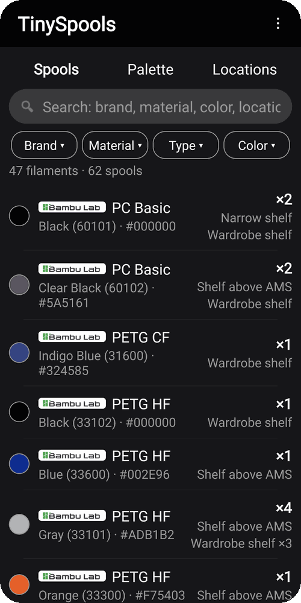
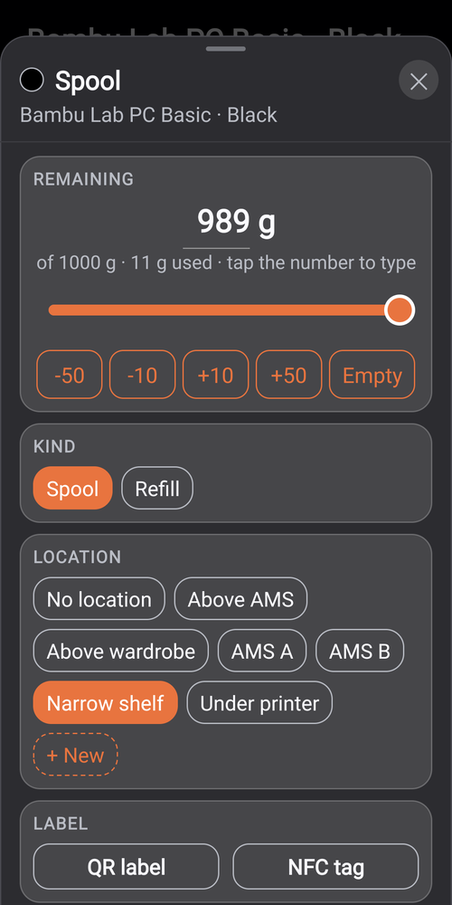

TinyOwl › TinySpools

Your filament, sorted.
For people who just want to know what filament they have, where it is and how much is left - no spreadsheets, no print farm software. Adding a spool takes seconds, and the palette shows every color you own at a glance.



Add a spool in seconds
Scan the barcode on the filament box: 5,600+ barcodes from 41 brands are recognized right away. Or pick the color from a catalog of 4,700+ colors from 67 brands, and the brand, color, RGB value and spool weight fill in for you. A Bambu Lab spool fills in when you touch it to the phone.
Pick from the palette
Every color you own, grouped by material. Total remaining fills each color by how much is left, and Opened shows only the spools you have started. Tap a color to see its spools from every brand.
Find any spool fast
Search brand, material, type, color, color code and shelf at once. Filters show how many spools match. Order the list by brand, material or color.
Grams left and shelves
Set what is left with a slider, mark a spool Spool or Refill and move it to another shelf in one tap. Each shelf shows its spools, the grams left on it and its colors.
Check what you have
Start a check and mark every spool found or not found, shelf by shelf if you like. When you finish, the ones you cannot find wait in Unassigned until they turn up, then go back to a shelf in one tap.
Labels and NFC
Print a QR label or write an NFC sticker, and scanning or touching it opens that spool.
Your data stays yours
No account. Backups go to a folder you choose, for example Google Drive, and you can restore any earlier point. The app goes online only when you ask it to update the barcode database.
Free during testing, and testers keep the full app for free. No ads, no tracking. Android 10 or newer. Coming to Google Play.
Try it before release
TinySpools is in closed testing on Google Play. Send the Google account email you use on your phone, and you will be added to the tester list. All we ask: keep the app installed for at least 14 days and tell us what does not work.